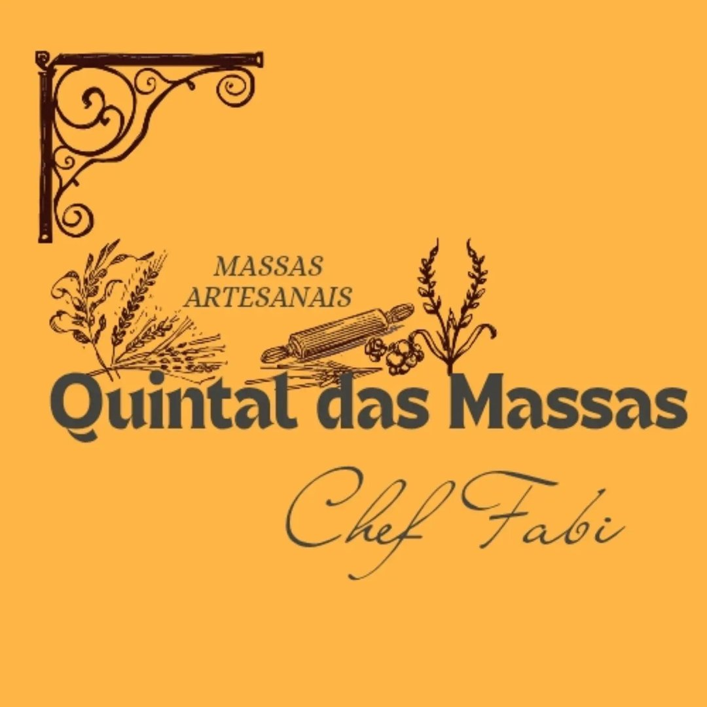

Massa fresca
Preparamos cada massa com tempo, cuidado e ingredientes que respeitam o sabor da casa.

Massas artesanais
Chef Fabi
Aqui você encontra muita qualidade e sabor. Esperamos você e sua família!
Convidamos você a viver uma experiência gastronômica especial, preparada com carinho e sabor em cada detalhe. Em nosso cardápio você encontra massas artesanais, pratos regionais, petiscos, carnes selecionadas e até sabores exóticos - tudo pensado para surpreender o seu paladar.
Desejamos que você aproveite cada momento e tenha uma excelente experiência à mesa.
 Feito à mão
Feito à mão
O jeito do Quintal
Preparamos cada massa com tempo, cuidado e ingredientes que respeitam o sabor da casa.
Receitas generosas que passeiam pelas memórias do interior e chegam à mesa para compartilhar.
Para fechar a experiência, sobremesas feitas para prolongar a conversa e deixar vontade de voltar.
Uma seleção do quintal